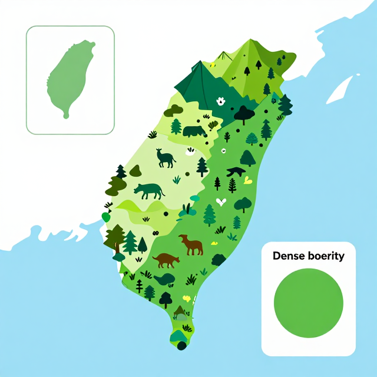
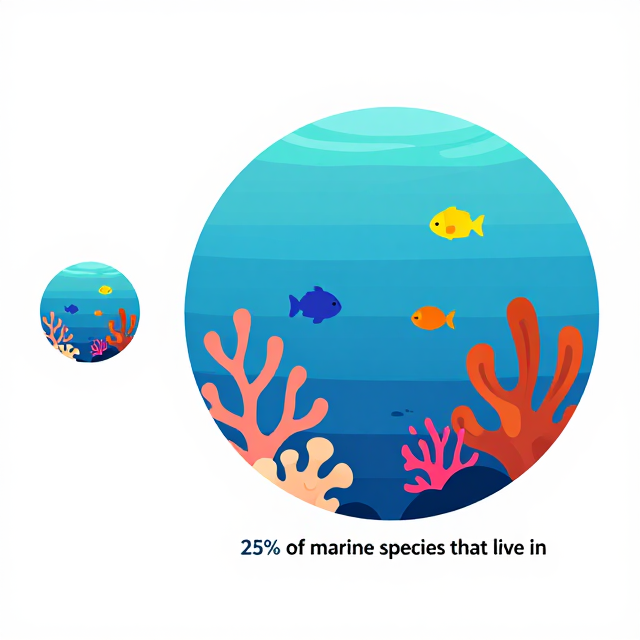

地球，不只是人類的家
陸地、海洋、都市,都是生命的家
本課三大問
到底是什麼?
只在森林嗎?
我們能做什麼?
把這三個問題記在心裡,下課前我們會一起回答。
生物多樣性大發現
從驚人的數字開始,認識地球的鄰居
你猜地球上有幾種生物?
這裡的「生物」包含動物、植物、真菌、細菌……所有有生命的東西！
先猜猜看，舉手表決，下一頁公布答案！
⬇ 下一頁公布答案！
2,100,000 vs 8,700,000
提問:你覺得最可能還有很多新物種的地方是哪裡?
小島大世界:臺灣物種密度是全球 100 倍

提問:你能說出 1 種只有臺灣才有的動物嗎?
生態系配對:把動物送回家 🏠
看看右欄的動物／植物，把牠們填入左欄正確的生態系格子裡！（每個生態系可能不只一種喔）
| 生態系 | 填入動物／植物編號 | 這個生態系的關鍵特色 |
|---|---|---|
| 🌳 森林 | ||
| 🌊 海洋（珊瑚礁） | ||
| 💧 濕地／水田 | ||
| 🏙️ 都市／校園 |
💬 討論：有沒有哪種動物可能出現在超過一個生態系？為什麼？
陸地、海洋與都市都有家
珊瑚礁、黑面琵鷺、都市綠地
海裡的熱帶雨林:珊瑚礁

提問:保護珊瑚 = 保護幾分之幾的海洋居民?
國際明星:黑面琵鷺,一半都來臺灣
提問:為什麼牠們選臺灣?(提示:食物、氣候、濕地)
都市也是生態系:綠地多 10%,降溫 1°C
校園任務:5 分鐘走出去,記錄你看到的 3 種生物。
季節的魔法與消失的鄰居
大自然有個神奇的時鐘
四季的台灣:誰在哪一季出現?
許多生物的繁殖、遷徙都靠季節當信號。
如果春天太熱、冬天不冷,整個生態系時鐘就會大亂。
校園生物年曆
想想看，你在校園的四個季節，各會看到哪一種生物（動物或植物都可以）？
| 季節 | 你看到的生物（動物或植物，寫一種就好） | 氣候特徵（勾選） | 你的觀察地點 |
|---|---|---|---|
| 🌸 春 3–5月 |
☐ 溫暖多雨 ☐ 梅雨季節 ☐ 植物發芽 ☐ 蛙類鳴叫 |
||
| 🌞 夏 6–8月 |
☐ 悶熱潮濕 ☐ 午後雷陣雨 ☐ 蟬鳴聲大 ☐ 花木茂盛 |
||
| 🍂 秋 9–11月 |
☐ 早晚涼爽 ☐ 東北季風 ☐ 候鳥出現 ☐ 部分植物結果 |
||
| ❄️ 冬 12–2月 |
☐ 乾燥偏涼 ☐ 東北季風強 ☐ 冬候鳥來台 ☐ 梅花盛開 |
💡 生物提示：杜鵑花（春）、鳳凰花／油桐花（夏）、紫斑蝶（秋）、黑面琵鷺（冬）
消失中的鄰居:臺灣石虎僅約 500 隻 🐆
對我來說,生物多樣性是……
寫下你自己的一句話,張貼在班級牆面
我們就是守護者
校園裡的公民行動
校園棲地大體檢
| 角落位置 | 看到的生物（動物或植物都算，寫 3 種） | 這裡可以改善的地方 | 你的感受 |
|---|---|---|---|
| 角落 ___ （角落名稱） |
①
②
③
|
☐ 很多生物 ☐ 還算豐富 ☐ 很少生物 |
我的生態行動:你選哪一個？
從下面的行動中，每組選 1 個你們覺得真的做得到的。
🏠 在家可以做
- 不亂丟垃圾，隨手撿一片落葉以外的垃圾
- 洗碗時不讓水一直開著
- 不買外來種寵物（如巴西龜）
- 陽台放一盆植物，觀察有沒有昆蟲來
🏫 在學校可以做
- 在校園找一棵樹，每週記錄它的變化
- 撿起校園裡的垃圾（特別是塑膠）
- 用寶特瓶做一個小鳥喝水台，放在花圃旁
- 觀察記錄校園昆蟲，貼在班級牆上分享
🌳 在社區可以做
- 去公園觀察，找到 3 種以上的生物
- 不餵食流浪貓狗（減少流浪動物對野生動物的影響）
- 參加學校或社區的淨灘、淨溪活動
- 告訴家人不要使用太多殺蟲劑
我的生態行動約定 🌿
選一個你真的做得到的行動，寫下來，和好朋友互相承諾！
三個關鍵字,一起記住
三層多樣才完整
都是生命的家
9–12 歲也做得到
記住這幾個數字：870 萬種（估計總數）・62,000 種（臺灣原生）・500 隻（石虎）・25%（珊瑚礁養活海洋物種比例）
每一種生命都有它的位置，你也是。